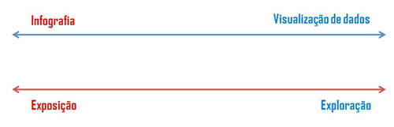

O projeto Visualizando a Gente foi desenvolvido pelos alunos do 1 ano do Curso Técnico Integrado em Multimídia do IFPB – Campus Cabedelo, durante o ano de 2019, na disciplina de Projeto Integrador. O mesmo teve como objetivo o desenvolvimento de habilidades transdisciplinares por meio da criação de visualizações de dados.
Podemos entender a visualização de dados como uma maneira de transformar dados brutos e abstratos em estruturas visuais para auxiliar na compreensão de determinado assunto diminuindo, assim, o esforço cognitivo. Como reforçam Nascimento e Ferreira (2011), a visualização também pode “ajudar na descoberta de informações escondidas” ( p. 15). Um exemplo do uso da visualização de dados para contar uma história é apresentado na Figura 01. Nesta visualização Nathan Yau (2009) mostra o índice do desemprego nos Estados Unidos entre os anos de 2004 e 2009.
Figura 01: Visualização de dados sobre desemprego nos Estados Unidos criado por Nathan Yau (2009). Fonte: Flowing Data
Como exposto na figura acima, a visualização de dados não precisa contar uma história jornalística e nem um fato muito claro. Cabe a esta técnica, a exploração dos dados e a tradução destes de maneira visual. Desta forma, a visualização de dados se diferencia da infografia. Segundo Lima (2009), o infográfico pode ser definido como “uma peça gráfica que utiliza simultaneamente a linguagem verbal gráfica, esquemática e pictórica, voltada prioritariamente à explicação de algum fenômeno” (p. 23). O autor afirma que, em geral, a forma de infografia mais utilizada é a jornalística que tem como objetivo contar alguma matéria e/ou história. A figura 02 apresenta um exemplo de infográfico mostrando o processo de história e construção do Cristo Redentor, no Rio de Janeiro.
Figura 02: História e projeto do Cristo Redentor, Rio de Janeiro, OGlobo. Fonte: Alessandro Alvim
Essa diferença entre visualização e infografia também é reforçada por Teixeira (2014 apud Cairo, 2011). A autora faz uma síntese visual dessa diferença, na qual, a infografia está mais preocupada na exposição das informações enquanto a visualização de dados, além de fazer a exposição, se preocupa também com a exploração do dado, como demonstrado na figura 03.

Figura 03: Demonstração gráfica da diferença entre visualização de dados e infografia. Fonte: Teixeira, 2014 .
Alguns exemplos de visualização de dados como os gráficos em linha, barras e de pizza são comuns em revistas, livros, jornais e noticiários de TV. Dessa forma, a visualização de dados pode ser uma importante ferramenta multidisciplinar, pois reforça elementos e estruturas oriundas dos outros campos de conhecimento como o textual, o visual e o esquemático. O desenvolvimento dessa técnica pode dar ao discente, principalmente o de ensino médio, uma vivência nesse novo tipo de texto multimodal que é característico dos anos 2000 até os dias de hoje (Calegari e Perfeito, 2013).
As técnicas da visualização de dados têm sido exploradas e aplicadas em várias áreas como, por exemplo, na consulta a bases de dados, no diagrama de organogramas e árvores genealógicas e no monitoramento de bolsa de valores (Meirelles, 2013, p. 88). Dessa forma, a visualização de dados surge como recurso pedagógico em várias disciplinas do âmbito escolar e com bons resultados no Ensino Médio (Correa, Fernandes e Panini, 2010; Silva e Chaves, 2011; Ribeiro, 2012; Flores, Wagner e Buratto, 2012; Calegari e Perfeito, 2013; Becker e Martins 2015; Bulegon, Brescher, Dos Santos, 2017).
O projeto Visualizando a Gente desenvolveu nos discentes a capacidade de aplicação dos conceitos e teorias estudadas em vários campos existentes no âmbito da comunicação. Dessa forma, percebe-se que a visualização de dados contribui para uma formação interdisciplinar do discente no Curso Técnico Integrado em Multimídia. A transformação de dados brutos e abstratos em estruturas visuais facilita a leitura e compreensão dessas informações pelas pessoas no dia a dia. Ao estudarem e aplicarem essa técnica, os futuros técnicos em multimídia desenvolvem habilidades que serão importantes no seu campo de atuação profissional.
BECKER, E. L. S; MARTINS, G. DOS S. Cartografia, infografia e o estudo do lugar. VII Seminário Internacional sobre desenvolvimento regional - Globalização em Tempos de Regionalização – Repercussões no Território Santa Cruz do Sul, RS, Brasil, 9 a 11 de setembro de 2015.
BULEGON, A. M; BRESCHER, C. F; DOS SANTOS, L. R. Infográficos: possibilidade de atividades de ensino para aulas de Física e Química. XI Encontro Nacional de Pesquisa em Educação em Ciências – XI ENPEC. Universidade Federal de Santa Catarina, Florianópolis, SC – 3 a 6 de julho de 2017.
CALEGARI, D. A; PERFEITO, A. M. Infográfico: possibilidades metodológicas em salas de aula de Ensino Médio. Entretextos, Londrina, v. 13, n. 1, p. 291-307, jan./jun. 2013. CORREA, M. G. G; FERANDES, R. R; PAINI, L. D. Os avanços tecnológicos na educação: o uso das geotecnologias no ensino de geografia, os desafios e a realidade escolar. Acta Scientiarum. Human and Social Sciences. Maringá, v. 32, n. 1 p. 91-96, 2010.
FLORES, C.R; WAGNER, D. R; BURATTO, I. C. F. Pesquisa em visualização na educação matemática: conceitos, tendências e perspectivas. Educ. Matem. Pesq., São Paulo, v.14, n.1, pp.31-45, 2012.
LIMA, R. C. 2009. Análise da infografia jornalística. Dissertação de Mestrado. UERJ, Escola Superior de Desenho Industrial. Rio de Janeiro.
MEIRELLES, Isabel. Design for information: an introduction to the histories, theories, and best practices behind effective information visualizations. Rockport Publishers, 2013.
NASCIMENTO, H; FERREIRA, C. Hugo. Uma introdução à visualização de informações. VISUALIDADES, Goiânia v.9 n.2 p. 13-43, jul-dez 2011.
RIBEIRO, A. E. Visualização de informação e alfabetismo gráfico: questões para a pesquisa. Inf. & Soc.:Est., João Pessoa, v.22, n.1, p. 39-50, jan./abr. 2012.
SILVA, A. P. M da; CHAVES, J. M. Utilização do Google Maps e Google Earth no ensino médio: estudo de caso no Colégio Estadual da Polícia Militar - Diva Portela em Feira de Santana - BA. Anais XV Simpósio Brasileiro de Sensoriamento Remoto - SBSR, Curitiba, PR, Brasil, 30 de abril a 05 de maio de 2011, INPE p.3220-3226.